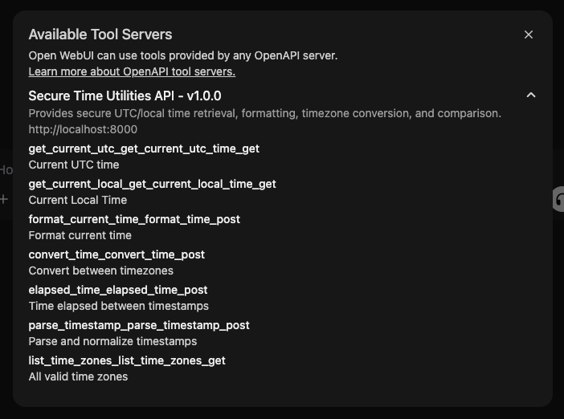
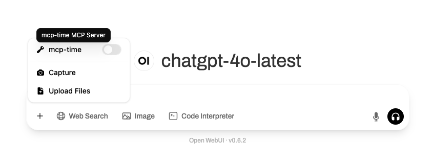

🔗 Integração aberta da Webui
Visão geral
Open Webui V0.6+ suporta integração perfeita com ferramentas externas por meio dos servidores OpenAPI-o que significa que você pode estender facilmente seus fluxos de trabalho LLM usando servidores de ferramentas personalizados ou movidos a comunidade 🧰.
Neste guia, você aprenderá como iniciar um servidor de ferramentas compatível com o OpenAPI e conectá-lo para abrir o WebUI através da interface do usuário intuitiva. Vamos começar! 🚀
Etapa 1: Inicie um servidor de ferramentas OpenApi
Para começar, você precisará iniciar um dos servidores de ferramentas de referência disponíveis norepo o OpenApi-Servers. Para testes rápidos, usaremos o servidor de ferramentas de tempo como exemplo.
🛠️ Exemplo: Iniciando otimeservidor localmente
Git clone https://github.com/open-webui/openapi-servers
CD OpenApi-Servers
# Navegue até o servidor de tempo
Servidores de CD/tempo
# Instale as dependências necessárias
pip install -r requisitos.txt
# Inicie o servidor
Uvicorn Main: App -Host 0.0.0.0 -Relload
Uma vez em execução, isso hospedará um servidor Local OpenApi emhttp: // localhost: 8000, para o qual você pode apontar o webui.

Etapa 2: Conecte o servidor de ferramentas em webui aberto
Em seguida, conecte seu servidor de ferramentas em execução para abrir o Webui:
- Abra o webui no seu navegador.
- Aberto ⚙️Configurações
- Clique em ➕FerramentasPara adicionar um novo servidor de ferramentas.
- Digite o URL onde o servidor de ferramentas do OpenAPI está em execução (por exemplo,,http: // localhost: 8000
- Clique em "Salvar".

🧑💻 Servidores de ferramentas de usuário vs. 🛠️ Servidores de ferramentas globais
Existem duas maneiras de registrar servidores de ferramentas em Webui aberto:
1. Servidores de ferramentas de usuário (adicionados através de configurações regulares)
- Acessível apenas ao usuário que registrou o servidor de ferramentas.
- A conexão é feita diretamente do navegador (lado do cliente) pelo usuário.
- Perfeito para fluxos de trabalho pessoais ou ao testar ferramentas personalizadas/locais.
2. Servidores de ferramentas globais (adicionados por meio de configurações de administrador)
Os administradores podem gerenciar servidores de ferramentas compartilhados disponíveis para todos ou usuários selecionados em toda a implantação:
- Vá para 🛠️Configurações do administrador> Ferramentas
- Adicione o URL do servidor de ferramentas exatamente como faria nas configurações do usuário.
- Essas ferramentas são tratadas de maneira semelhante para abrir as ferramentas embutidas da Webui.
Principal Diferença: De onde são feitos os pedidos?
A principal distinção entreServidores de ferramentas de usuárioeServidores de ferramentas globaisé onde a conexão e os pedidos da API são realmente feitos:
-
Servidores de ferramentas de usuário
- Solicitações para o servidor de ferramentas são executadasdiretamente do seu navegador(o cliente).
- Isso significa que você pode se conectar com segurança aos URLs de localhost (como
http://localhost:8000)-Mesmo os pontos de extremidade privados ou apenas para desenvolvimento, como o seu sistema de arquivos locais ou ferramentas de desenvolvimento-sem o risco de exposição à Internet mais ampla ou a outros usuários. - Sua conexão está isolada; Somente o seu navegador pode acessar esse servidor de ferramentas.
-
Servidores de ferramentas globais
- Os pedidos são enviadosNo back -end/servidor aberto da Webui(não o seu navegador).
- O back -end deve poder alcançar o URL do servidor de ferramentas que você especificar - então
localhostsignifica a localhost do servidor de back -end,nãoseu computador. - Use isso para compartilhar ferramentas com outros usuários em toda a implantação, mas fique atento: como o back -end faz as solicitações, você não pode acessar seus recursos locais pessoais (como seu próprio sistema de arquivos) por meio desse método.
- Pense em segurança! Exponha apenas pontos de extremidade remotos/globais que são seguros e que devem ser acessados por vários usuários.
Tabela de resumo:
| Tipo de servidor de ferramentas | Solicitar origem | Usar localhost? | Use exemplo de caso |
|---|---|---|---|
| Servidor de ferramentas do usuário | Navegador do usuário (lado do cliente) | Sim (privado para você) | Ferramentas pessoais, desenvolvimento/teste local |
| Servidor de ferramentas globais | Open Webui Backend (lado do servidor) | Não (a menos que seja executado no próprio back -end) | Ferramentas de equipe/compartilhamento, integrações corporativas |
Os servidores de ferramentas do usuário são melhores para ferramentas pessoais ou experimentais, especialmente para aquelas em execução em sua própria máquina, enquanto os servidores globais de ferramentas são ideais para ambientes de produção ou compartilhados, onde todos precisam de acesso às mesmas ferramentas.
👉 Opcional: Usando um arquivo de configuração com MCPO
Se você estiver executando várias ferramentas através do MCPO usando um arquivo de configuração, tome nota:
🧩 Cada ferramenta é montada sob seu próprio caminho!
Por exemplo, se você estiver usando ferramentas de memória e tempo simultaneamente através do MCPO, cada uma delas estará disponível em uma rota distinta:
Isso significa:
- Ao conectar uma ferramenta no Webui aberto, você deve inserir a rota completa para essa ferramenta específica - não digite apenas o URL da raiz (http: // localhost: 8000
- Adicione cada ferramenta individualmente em configurações abertas do WebUI usando seus respectivos URLs de subspatina.

✅ Bom:
http: // localhost: 8000/time
http: // localhost: 8000/memória
🚫 Não é válido:
Isso garante que o Open Webui reconheça e se comunique com cada servidor de ferramentas corretamente.
Etapa 3: Confirme que seu servidor de ferramentas está conectado ✅
Depois que o servidor de ferramentas estiver conectado com sucesso, o Open Webui exibirá um indicador de servidor de ferramentas diretamente na área de entrada da mensagem:
📍 Agora você verá este ícone abaixo da caixa de entrada:

Clicar neste ícone abre um pop -up onde você pode:
- Exibir informações do servidor de ferramentas conectadas
- Veja quais ferramentas estão disponíveis e qual servidor elas são fornecidas por
- Debug ou desconecte qualquer ferramenta, se necessário
🔍 Veja como é a informação da ferramenta Modal:

Os servidores globais de ferramentas globais parecem diferentes - e estão ocultos por padrão!
Se você conectou um servidor de ferramentas globais (ou seja, um que é configurado por administrador), ele não aparecerá automaticamente na área de entrada como os servidores de ferramentas de usuário.
Em vez de:
- As ferramentas globais estão ocultas por padrão e devem ser explicitamente ativadas por usuário.
- Para ativá -los, você precisará clicar no botão ➕ na área de entrada da mensagem (parte inferior esquerda da caixa de bate -papo) e alternar manualmente as ferramentas globais específicas que você deseja usar.
Aqui está o que parece:

Notes Notas importantes para servidores globais de ferramentas:
- Eles não aparecerão no pop -up do indicador da ferramenta até que até o menu ➕.
- Cada ferramenta global deve ser alterada individualmente para se tornar ativa dentro do seu bate -papo atual.
- Uma vez ativado, eles funcionam da mesma maneira que as ferramentas do usuário.
- Os administradores podem controlar o acesso a ferramentas globais por meio de permissões baseadas em funções.
Isso é ideal para configurações de equipe ou ambientes compartilhados, onde as ferramentas comumente usadas (por exemplo, pesquisa de documentos, memória ou pesquisa da Web) devem ser acessíveis centralmente por vários usuários.
(Opcional) Etapa 4: Use a ferramenta "Native" Function Calling (estilo React) Use 🧠
Para que isso funcione de maneira eficaz,Seu modelo selecionado deve suportar chamadas de ferramentas nativas. Alguns modelos locais reivindicam suporte, mas geralmente produzem resultados ruins. Recomendamos fortemente o uso do GPT-4O ou outro modelo OpenAI que suporta a função que chama nativamente para a melhor experiência.
Deseja ativar chamadas de função nativa no estilo React (raciocínio + atuação) diretamente dentro de suas conversas? Você pode alternar o Open Webui para usar chamadas de funções nativas.
✳️ Como ativar a chamada de função nativa:
- Abra a janela de bate -papo.
- Vá para ⚙️Controles de bate -papo> Params avançados
- Mude oChamada de funçãoparâmetro de
DefaultparaNative

Precisa de mais ferramentas? Explore e expanda! 🧱
Orepo o OpenApi-ServersInclui uma variedade de servidores de referência úteis:
- 📂 Acesso ao sistema de arquivos
- 🧠 Gráficos de memória e conhecimento
- 🗃️ No navegação de repositório Git
- 🌎 Pesquisa na web (WIP)
- 🛢️ Consulta de banco de dados (WIP)
Você pode executar qualquer um deles da mesma maneira e conectá -los para abrir o Webui repetindo as etapas acima.
Solução de problemas e dicas 🧩
- ❌ Não está conectando? Verifique se o URL está correto e acessível a partir do navegador usado para executar o Open Webui.
- 🔒 Se você estiver usando servidores remotos, verifique os firewalls e as configurações HTTPS!
- 📝 Para que os servidores persistam, considere implantá -los no Docker ou nos Serviços do Sistema.
Precisar de ajuda? Visite o 👉Página de discussõesouAbra um problema